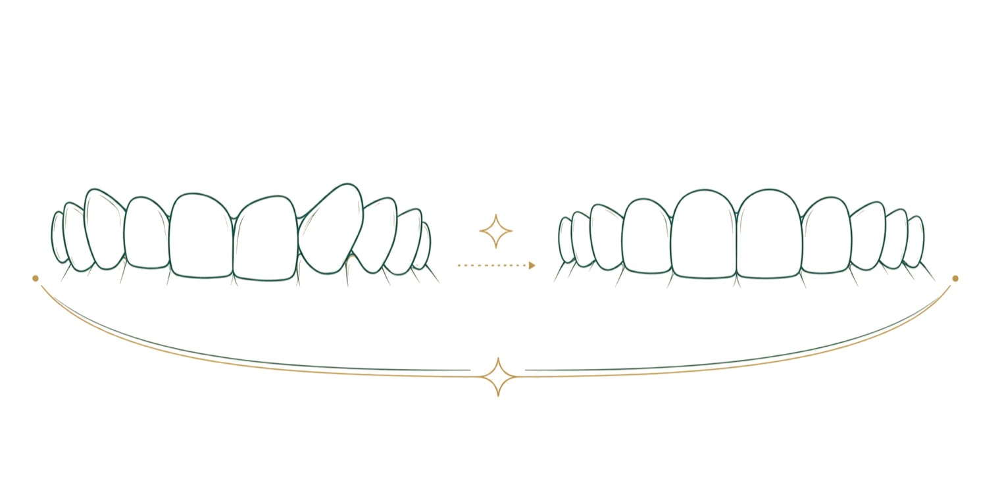

Şeffaf plakla tedavi olmaya karar verdiyseniz ya da bu seçeneği düşünüyorsanız, aklınızdaki sorular büyük olasılıkla günlük yaşamla ilgilidir: Plağı ne kadar takacağım, işte ya da okulda fark edilir mi, kaç kez kontrole geleceğim, tedavi bitince ne olacak? Bu rehber, şeffaf plak tedavisini ilk muayeneden pekiştirme dönemine kadar adım adım anlatır. Tel ile plak arasındaki seçim için ortodonti rehberimize bakabilirsiniz.
Tedavi nasıl başlar?
Her şey ortodontik muayeneyle başlar. Hekim dişlerin dizilimine, çenelerin birbirine göre konumuna, diş eti ve kemik sağlığına bakar. Röntgen çekilir, yüz ve ağız içi fotoğrafları alınır. Bu muayenenin amacı, şeffaf plağın sizin durumunuz için uygun olup olmadığını ve hedeflenen sonuca ulaşılıp ulaşılamayacağını belirlemektir.
Plak tedavisine başlamadan önce ağzın sağlıklı olması gerekir. Çürükler tedavi edilir, diş taşları temizlenir, diş eti iltihabı varsa giderilir. Plakların altında kalan bir çürük ya da iltihaplı diş eti, tedavi boyunca büyüyebilir.
Dijital plan ve ilk plaklar
Ağız içi tarayıcıyla dişlerin üç boyutlu kaydı alınır. Bu kayıt üzerinde dişlerin başlangıç konumundan hedef konuma kadar nasıl hareket edeceği adım adım planlanır. Plan, her aşamada hangi dişin ne kadar ilerleyeceğini gösterir ve tedavinin kabaca kaç plak süreceği bu aşamada ortaya çıkar.
Plan onaylanınca kişiye özel plak serisi üretilir. İlk plaklar takılırken hekim plakların oturmasını kontrol eder, takma ve çıkarma yöntemini gösterir ve bakım kurallarını anlatır. İlk birkaç gün dişlerde baskı hissi ve konuşmada hafif bir değişiklik olabilir; bu durum genellikle kısa sürede geçer.
Plak ne kadar süre takılır?
Şeffaf plağın etkisi, ağızda kaldığı süreye bağlıdır. Plaklar yalnızca yemek yerken, şekerli ya da renkli bir şey içerken ve dişleri fırçalarken çıkarılır; geri kalan bütün zamanda, uyku dahil, ağızda olmalıdır. Plakların günde ne kadar takılacağını hekiminiz söyler; tedavinin planlandığı gibi ilerlemesi için hekimin söylediği süreye uyulması gerekir.
Plaklar önerilen süreden az takılırsa dişler planlanan hızda ilerlemez, plaklar dişlere tam oturmamaya başlar ve tedavi uzar. Bu nedenle şeffaf plak, düzenli kullanım konusunda kendine güvenen kişiler için uygundur. Plak kutusunu yanınızda taşımak, plağın peçeteye sarılıp kaybolmasını önler.
Plak değişimi ve kontroller
Plaklar belirli aralıklarla bir sonrakiyle değiştirilir. Değişim aralığı plan türüne göre birkaç gün ile iki hafta arasında olabilir; sizin için geçerli aralığı hekiminiz söyler. Yeni plak takıldığında birkaç gün sıkılık hissi beklenir; bu, dişlerin hareket ettiğini gösterir.
Kontrol randevularında hekim, dişlerin planla aynı hızda ilerleyip ilerlemediğine bakar, plakların oturmasını kontrol eder ve sonraki plakları verir. Kontrol sıklığı tedavi planınızda yazılıdır. Hafta içi akşam ve Cumartesi randevuları, okul ya da iş düzenini bozmadan kontrollere gelmeyi kolaylaştırır.
Ataşmanlar ve ara düzeltmeler
Bazı diş hareketleri için, dişlerin yüzeyine diş renginde küçük çıkıntılar yapıştırılır. Ataşman adı verilen bu çıkıntılar, plağın dişi daha iyi kavramasını ve dişi doğru yöne itmesini sağlar. Göze çok az batar ve tedavi sonunda dişe zarar vermeden kaldırılır. Bazı durumlarda dişler arasında çok ince bir zımparalama yapılarak yer açılabilir; bu işlem planda önceden belirtilir.
Tedavinin ortasında ya da sonunda, dişlerin bir bölümü planlandığı kadar ilerlemezse yeni bir tarama yapılarak ek plak serisi hazırlanabilir. Bu, tedavinin başarısız olduğu anlamına gelmez; ince ayar sürecinin olağan bir parçasıdır.
Günlük yaşamda plak
Plaklar takılıyken yalnızca sade su içilir. Yemekten sonra plakları takmadan önce dişler fırçalanmalı ya da en azından ağız suyla iyice çalkalanmalıdır; aksi halde yiyecek artıkları plakla diş arasında kalır ve çürük riski artar.
Plaklar soğuk ya da ılık suyla, yumuşak bir fırçayla temizlenir; sıcak su plağın biçimini bozabilir. Plaklar takılıyken sigara içmek plağı renklendirir. Konuşmadaki hafif değişiklik çoğu kişide birkaç gün içinde kaybolur.
Tedavi bitince: pekiştirme
Son plak tamamlandığında dişler yeni konumuna ulaşmış olur, ama bu konum henüz kalıcı değildir. Dişleri çevreleyen dokular kendini yeniden düzenlerken dişler eski yerlerine dönme eğilimi gösterir. Bunu önlemek için pekiştirme aygıtı kullanılır: ya dişlerin arkasına yapıştırılan ince bir tel ya da genellikle gece takılan şeffaf bir pekiştirme plağı.
Pekiştirme aygıtının ne kadar süre kullanılacağını hekiminiz belirler. Bu döneme uymak, aylarca süren tedavinin sonucunu korumanın en önemli koşuludur.
Sık yapılan hatalar
Şeffaf plak tedavisini uzatan durumların çoğu küçük alışkanlıklardan kaynaklanır. Plağı yemekten sonra fırçalamadan takmak, dişlerle plak arasında şekerli bir ortam oluşturur ve çürük riskini artırır. Plakla çay, kahve ya da asitli içecek içmek hem plağı renklendirir hem de dişleri bu içeceklerle uzun süre temasta bırakır.
Bir plağı erken ya da geç değiştirmek, planlanan hareketin aksamasına yol açabilir. Plağı kırmamak için ön dişlerden zorlayarak değil, arka dişlerin kenarından başlayarak çıkarmak gerekir. Plakları kâğıt peçeteye sarıp tepsi kenarına bırakmak, en sık kayıp nedenidir; kutu her zaman yanınızda olmalıdır. Kontrol randevularını ertelemek de hataların geç fark edilmesine neden olur.
Çocuk ve gençlerde şeffaf plak
Şeffaf plak yalnız yetişkinlere özgü değildir; uygun durumlarda gençlerde de kullanılabilir. Bu yaşta en önemli konu kullanım disiplinidir: plakların yeterli süre takılması çoğu zaman ailenin desteğini gerektirir. Çene gelişimi devam eden çocuklarda bazı düzeltmeler için farklı aygıtlar gerekebilir; hangisinin uygun olduğu ortodontik muayenede belirlenir.
Sık sorulan sorular
Şeffaf plak dışarıdan fark edilir mi?
Plaklar şeffaf olduğu için konuşurken çok az fark edilir. Ataşmanlı dişlerde yakından bakıldığında küçük çıkıntılar görülebilir.
Plağı bir gün takmazsam ne olur?
Bir günlük aksama bile dişlerin plana göre geri kalmasına yol açabilir. Plak tam oturmuyorsa kendiniz bir sonraki plağa geçmeyin; hekiminize danışın.
Şeffaf plak tedavisi ağrılı mı?
Yeni plağa geçişte birkaç gün baskı ve hassasiyet olabilir. Şiddetli ve sürekli ağrı beklenen bir durum değildir.
Plak kaybolursa ya da kırılırsa ne yapmalıyım?
Hemen hekiminize haber verin. Duruma göre bir önceki plak takılarak beklenebilir ya da yenisi hazırlanır.
Tedavi ne kadar sürer?
Süre, düzensizliğin derecesine ve plakların düzenli takılmasına bağlıdır. Tahmini süre dijital planda görülür; düzenli kullanım bu süreye uyulmasını sağlar.
Plakla spor yapabilir miyim?
Çoğu sporda plak takılı kalabilir. Temaslı sporlarda ağız koruyucu kullanımı hekiminizle konuşulmalıdır.
Plağı taktığımda konuşmam değişir mi?
İlk birkaç gün bazı seslerde hafif bir peltekleşme olabilir. Dil plağa alıştıkça bu çoğu kişide birkaç gün içinde kaybolur; yüksek sesle okumak alışmayı hızlandırır.
Tedavi sırasında dişlerim sallanır mı?
Diş hareketi sırasında dişlerde çok hafif bir oynama hissi olabilir; bu, dişlerin yer değiştirdiğini gösterir ve tedavi sonunda pekiştirmeyle sabitlenir. Belirgin sallanma fark ederseniz hekiminize söyleyin.
Plaklar nasıl saklanır?
Plağı çıkardığınızda peçeteye sarmak yerine saklama kabına koyun; peçeteye sarılan plaklar kolayca unutulur ya da atılır. Kabı temiz tutun, plağı sıcak bir yerde ya da evcil hayvanların ulaşabileceği bir yerde bırakmayın.
Kaynakça
- American Association of Orthodontists (Amerikan Ortodontistler Birliği). Hasta bilgilendirme kaynakları. aaoinfo.org
- American Dental Association (Amerikan Diş Hekimleri Birliği). Ortodonti ve ağız bakımı, MouthHealthy. mouthhealthy.org
Bu konu hakkında soru sormak ister misiniz? Diş hekimlerimize dilediğiniz saatte yazabilirsiniz.
Bize yazın